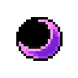

|  |
The Last Nightmare
|
The Last Nightmare est un projet réalisé par trois étudiants de L2 d’Informatique à l’Université du Mans.
Le jeu est un rogue-lite RPG en monde semi-ouvert et avec des combats en tour par tour. Inspiré des jeux Darkest Dungeon pour les combats et la gestion et de Pokémon pour le monde semi-ouvert et la partie RPG.
Vous incarnerez un survivant d’un monde rongé par un mal mystérieux qui semble lié à un sombre personnage.
Au long de votre aventure vous allez devoir tisser des liens avec de nombreux personnages qui pourront ensuite rejoindre votre équipe afin de venir à bout de cette malédiction.
Mais faites très attention, de nombreux ennemis redoutables seront là pour vous barrer la route…Serez-vous prêt à relever le défi et à sauver le monde ?
Comment jouer :
Vous commencerez votre aventure au camp de base. Au fil des dialogues votre chemin se tracera tout seul. Pour vous déplacer dans la carte, utilisez simplement les touches Z Q S D du clavier (modifiable dans les options). Pour pouvoir ramasser les objets que vous trouverez au sol, appuyez sur E.
La carte étant générée procéduralement (c-à-d de manière plus ou moins aléatoire), chaque partie sera différente.
Projet réalisé par MOREAU Enzo / PASQUIER Lina / RASSON Emma
Date de création du projet : 23 janvier 2024
Date de fin de projet : 25 avril 2024